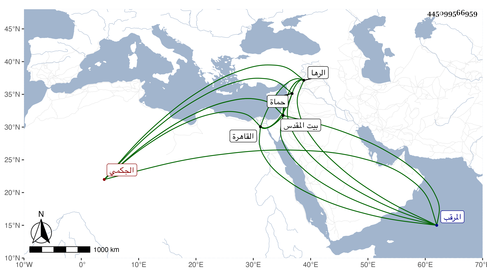

0902Sakhawi.DawLamic.ITO20230111-ara1.EIS1600.445099566959
Biography ID: 445099566959
1105
شاذ بك الجكمي جكم من عوض . تنقل بعد أستاذه إلى أن اتصل بخدمة ططر ، فلما تسلطن عمله خاصكيا ثم تأمر عشرة في أوائل الدولة الأشرفية وصار من رؤس النوب ثم من الطبلخاناه ثم رأس نوبة ثاني ثم ولي نيابة الرها ثم صرف على طبلخاناه بالقاهرة ثم قدمه الظاهر وصار أمير المحمل ثم ناب بحماة ثم وجه إلى القدس بطالا ثم حبس بقلعة المرقب ثم أعيد إلى القدس فلم يلبث أن مرض وطال مرضه حتى مات في ربيع الأول سنة أربع وخمسين وهو في عشر الستين تقريبا ، وكان قصيرا جدا وعنده حدة وبعض خفة متوسط السيرة في فروسيته وأفعاله .
